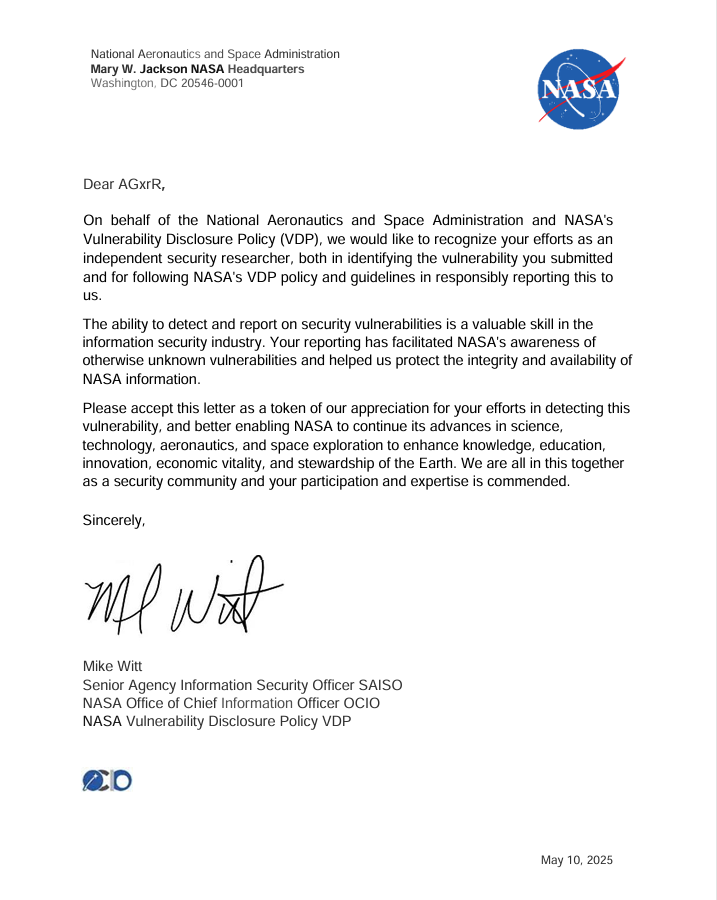

The Dangerous Fallacy of "Unlisted Links"
When engineers configure shared workspaces or cloud storage drives, they often make a critical assumption: "Because the shared link contains a high-entropy 44-character cryptographic token, only intended internal staff will ever find it."
In offensive security, relying on obscurity is a recipe for disaster. High-entropy links leak continuously through indexed meeting summaries, HTTP referrer headers, open repositories, and web crawlers. When an organization relies on the secrecy of a link instead of enforcing access control, an exposed link instantly turns an anonymous external visitor into an authenticated insider.
In this case, an unauthenticated user could not only read sensitive internal contacts, but also overwrite, upload, or delete data within the repository.
Discovery & Passive Reconnaissance
The asset was identified during a passive Open-Source Intelligence (OSINT) research session. Instead of conducting intrusive network scans that might violate testing boundaries, the focus was purely on Google Dorking to detect indexed cloud assets that accidentally escaped internal perimeters.
site:drive.google.com/drive/folders/* "nasa" (ext:xls OR ext:csv OR ext:pdf)
site:docs.google.com/spreadsheets/* intext:"nasa.gov" "internal"
Within a targeted search, search engines returned an indexed direct storage link tied to an active collaboration initiative. To confirm the access tier non-destructively, an initial probe was sent via curl:
curl -I "https://drive.google.com/drive/folders/[REDACTED_FOLDER_ID]"
HTTP/2 200 OK
content-type: text/html; charset=utf-8
cache-control: no-cache, no-store, max-age=0, must-revalidate
The server responded with an immediate 200 OK. No Single Sign-On (SSO) redirect, no NASA Launchpad gate, and no access prompt. The directory was entirely accessible to the public internet.
The Core Bug: Unrestricted Anonymous Write Privileges
While discovering an exposed directory is a standard information leak, probing the folder's access control metadata revealed a far more severe flaw. Querying the drive permissions API exposed the root misconfiguration:
curl -i "https://www.googleapis.com/drive/v3/files/[REDACTED_FOLDER_ID]?fields=capabilities,permissions"
{
"capabilities": {
"canAddChildren": true,
"canDelete": true,
"canDeleteChildren": true,
"canEdit": true,
"canListChildren": true,
"canShare": false
},
"permissions": [
{
"id": "anyoneWithLink",
"type": "anyone",
"role": "writer",
"allowFileDiscovery": false
}
]
}
Notice the entry: "role": "writer" for "type": "anyone". The folder had been configured to grant full editing rights to anyone holding the link, with inherited permissions applied recursively to all files and subdirectories.
Proof of Concept & Attack Vectors
Adhering strictly to Bugcrowd's rules of engagement and ethical standards, destructive actions were not performed. The attack vectors were confirmed non-destructively:
1. Sensitive PII Harvesting
Inspection of existing files confirmed the presence of unredacted operational records containing sensitive Personally Identifiable Information (PII):
- Full legal names of research staff, contractors, and project leaders
- Direct mobile numbers and office lines
- Internal
@nasa.govemail addresses alongside partner organization contacts - Physical workstation tags and department designations
2. Integrity Tampering & Payload Distribution Risk
Because canAddChildren: true and canDeleteChildren: true were active, an unauthenticated malicious actor could have:
- Wiped Records: Deleted operational documents and logs without leaving a distinct user identity trail.
- Distributed Payloads: Staged weaponized PDF documents or infected Office documents directly inside a legitimate NASA-linked cloud repository for phishing campaigns.
curl -X POST \
-H "Content-Type: application/json" \
--data '{"name":"vdp_poc_test.txt","mimeType":"text/plain"}' \
"https://www.googleapis.com/upload/drive/v3/files?uploadType=resumable"
HTTP/2 200 OK
Location: https://www.googleapis.com/upload/drive/v3/files?uploadType=resumable&upload_id=[REDACTED]Validation & Hall of Fame Acknowledgment

Key Takeaways
- Unlisted links are public: If an endpoint relies solely on link secrecy without verifying the session identity, anyone who discovers the link possesses the same privileges as internal personnel.
- Enforce Least Privilege by Default: Link sharing configurations must default to restricted viewer access, requiring explicit authorization for modification.
- OSINT Remains a Potent Threat Vector: High-impact discoveries often stem from passive reconnaissance and configuration audits rather than complex memory corruption.